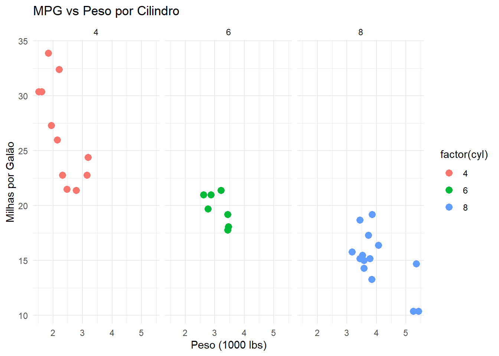
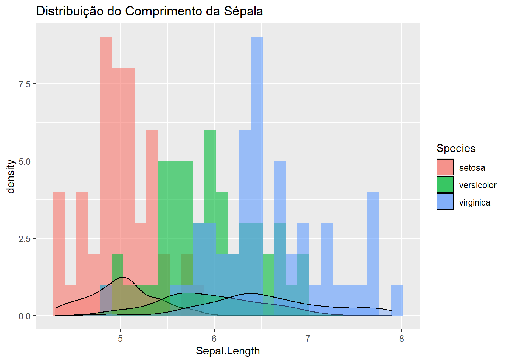

x <- 10 # atribui 10 a x
y = 5 # atribui 5 a yCaderno FIP606
1. Operações Básicas
1.1 Atribuição e Variáveis
Operadores de atribuição:
<-é o mais usado, embora=funcione.Nomes de variáveis: usam letras, números,
.e_, mas não podem começar com número ou ponto seguido de número. Exemplo:pontuacao_aluno <- 90 .variavel_oculta <- 1 # válido, mas desaconselhado
1.2 Vetores e Operações Elementares
Criar vetores:
c(),:eseq().nums <- c(1, 2, 3, 4) seq_vezes <- seq(from=0, to=1, length.out=5) intervalo <- 1:5Operações aritméticas:
a <- c(1,2,3); b <- c(4,5,6) a + b # c(5,7,9)[1] 5 7 9a * 2 # c(2,4,6)[1] 2 4 6Regra de reciclagem: vetores menores se repetem para igualar o tamanho:
c(1,2) + c(1,2,3,4) # c(2,4,4,6)
1.3 Operadores Lógicos e de Comparação
Comparação:
<,>,<=,>=,==,!=.Lógicos:
&(E elemento a elemento),|(OU elemento a elemento),!(NÃO). Use&&,||para condição única.x <- c(1, 2, 3) x > 1 # c(FALSE, TRUE, TRUE)[1] FALSE TRUE TRUEx >= 2 & x <= 3 # c(FALSE, TRUE, TRUE)[1] FALSE TRUE TRUE
1.4 Valores Ausentes e Especiais
NA: falta de dado;NaN: resultado indefinido;Inf/-Inf: infinito.Funções:
is.na(),is.nan(),is.finite(),is.infinite().Tratamento de NAs:
dados <- c(1, NA, 3) dados <- na.omit(dados) mean(dados, na.rm=TRUE)[1] 2
2. Estruturas de Dados
2.1 Vetores Atômicos e Coerção
Tipos: numeric, integer, character, logical, complex, raw.
Hierarquia de coerção: logical -> integer -> numeric -> complex -> character.
misto <- c(TRUE, 2, "a") # convertido para character
2.2 Fatores
Dados categóricos com níveis fixos.
f <- factor(c("baixo","médio","alto"), levels=c("baixo","médio","alto")) levels(f)[1] "baixo" "médio" "alto"table(f)f baixo médio alto 1 1 1Converter:
as.character(f),as.numeric(f).
2.3 Datas e Horários
Date:
as.Date("2025-07-09"), formatos%Y-%m-%d.POSIXct/POSIXlt: data-hora.
d <- as.Date("2025-07-09", "%Y-%m-%d") dt <- as.POSIXct("2025-07-09 15:00:00")Pacote lubridate:
library(lubridate) ymd("20250709")[1] "2025-07-09"mdy("07-09-2025")[1] "2025-07-09"hms("15:00:00")[1] "15H 0M 0S"
2.4 Listas
Coleções heterogêneas ordenadas.
Acesso:
[[ ]]ou$.lst <- list(nome="Igor", notas=c(90,95), aprovado=TRUE) lst[["notas"]][1] 90 95lst$aprovado[1] TRUE
2.5 Data Frames e Tibbles
Tabelas bidimensionais heterogêneas.
df <- data.frame(id=1:3, nota=c(10,20,15), stringsAsFactors=FALSE)Tibbles:
library(tibble) tb <- tibble(id=1:3, nota=c(10,20,15))Inspeção:
str(),head(),glimpse().
2.6 Matrizes e Arrays
- Matriz: bidimensional homogênea (
matrix()). - Array: estruturas com múltiplas dimensões (
array()). - Acesso:
[linha, coluna]ou[i,j,k].
3. Importação e Manipulação de Dados
3.1 Leitura de Dados
- CSV:
read.csv(),read_csv()(readr). - Excel:
readxl::read_excel(). - Alta performance:
data.table::fread(),vroom::vroom().
3.2 Princípios de Dados Tidy
- Cada variável em uma coluna, cada observação em uma linha.
- tidyr:
pivot_longer(),pivot_wider()separate(),unite()
3.3 Workflow dplyr
library(dplyr)
df %>%
filter(nota > 10) %>%
select(id, nota) %>%
mutate(pct = nota / max(nota)) %>%
arrange(desc(pct)) id nota pct
1 2 20 1.00
2 3 15 0.75Operações agrupadas:
df %>% group_by(id) %>% summarise(nota_media = mean(nota))# A tibble: 3 × 2 id nota_media <int> <dbl> 1 1 10 2 2 20 3 3 15
3.4 Conjuntos de Dados Embutidos
O R disponibiliza diversos conjuntos de dados (datasets) prontos para uso, úteis para exemplos e testes:
- iris: medidas de sépalas e pétalas de três espécies de íris.
- mtcars: características de desempenho de diversos modelos de automóveis.
- airquality: medições diárias de qualidade do ar em Nova York.
Para listar todos os datasets embutidos, use: data()
Para carregar explicitamente um dataset:
data(iris)
head(iris) Sepal.Length Sepal.Width Petal.Length Petal.Width Species
1 5.1 3.5 1.4 0.2 setosa
2 4.9 3.0 1.4 0.2 setosa
3 4.7 3.2 1.3 0.2 setosa
4 4.6 3.1 1.5 0.2 setosa
5 5.0 3.6 1.4 0.2 setosa
6 5.4 3.9 1.7 0.4 setosa4. Gráficos com ggplot2
4.1 Componentes Básicos
- ggplot(dados, aes(…)): define dados e mapeamentos.
- Camadas geom:
geom_point(),geom_line(),geom_bar(),geom_histogram(). - Facetas:
facet_wrap(),facet_grid().
4.2 Customização
- Temas:
theme_minimal(),theme_classic(). - Rótulos:
labs(title=, subtitle=, x=, y=, caption=). - Legendas:
theme(legend.position = "bottom").
4.3 Exemplos
library(ggplot2)
ggplot(mtcars, aes(x=wt, y=mpg, color=factor(cyl))) +
geom_point(size=3) +
facet_wrap(~cyl) +
labs(
title = "MPG vs Peso por Cilindro",
x = "Peso (1000 lbs)",
y = "Milhas por Galão"
) +
theme_minimal()
# Histograma com densidade
ggplot(iris, aes(x=Sepal.Length, fill=Species)) +
geom_histogram(alpha=0.6, position="identity", bins=30) +
geom_density(alpha=0.4) +
labs(title="Distribuição do Comprimento da Sépala")
5. Modelagem Estatística Básica
5.1 Modelos Lineares (lm)
modelo <- lm(nota ~ id + I(id^2), data=df)
summary(modelo)
Call:
lm(formula = nota ~ id + I(id^2), data = df)
Residuals:
ALL 3 residuals are 0: no residual degrees of freedom!
Coefficients:
Estimate Std. Error t value Pr(>|t|)
(Intercept) -15.0 NaN NaN NaN
id 32.5 NaN NaN NaN
I(id^2) -7.5 NaN NaN NaN
Residual standard error: NaN on 0 degrees of freedom
Multiple R-squared: 1, Adjusted R-squared: NaN
F-statistic: NaN on 2 and 0 DF, p-value: NA- Interpretar coeficientes, p-valores, R² e resíduos.
- Diagnósticos:
plot(modelo).
5.2 Modelos Lineares Generalizados (glm)
df$aprovado <- df$nota >= 12
glm_bin <- glm(aprovado ~ nota, family = binomial(link = "logit"), data = df)
summary(glm_bin)
Call:
glm(formula = aprovado ~ nota, family = binomial(link = "logit"),
data = df)
Coefficients:
Estimate Std. Error z value Pr(>|z|)
(Intercept) -116.146 252537.088 0 1
nota 9.269 18831.344 0 1
(Dispersion parameter for binomial family taken to be 1)
Null deviance: 3.8191e+00 on 2 degrees of freedom
Residual deviance: 3.5965e-10 on 1 degrees of freedom
AIC: 4
Number of Fisher Scoring iterations: 23- Familias:
binomial,poisson,Gamma. - Links:
logit,log,identity.
5.3 Avaliação de Modelos
- Análise de resíduos:
plot(modelo), DHARMa para GLMs. - Critérios de informação:
AIC(modelo),BIC(modelo). - Validação cruzada:
caret::train()ou tidymodels.
6. Estruturas de Controle: Agrupamento, Loops e Condicionais
6.1 Agrupamento com split, lapply, by e tapply
split(): divide dados em grupos:
iris_split <- split(iris, iris$Species)lapply(): aplica função a cada elemento:
media_sepala <- lapply(iris_split, function(df) mean(df$Sepal.Length))by(): aplica função por grupos em data frame:
by(data = iris$Sepal.Length, INDICES = iris$Species, FUN = mean)iris$Species: setosa [1] 5.006 ------------------------------------------------------------ iris$Species: versicolor [1] 5.936 ------------------------------------------------------------ iris$Species: virginica [1] 6.588tapply(): aplica função a subsets de um vetor:
tapply(iris$Sepal.Length, iris$Species, mean)setosa versicolor virginica 5.006 5.936 6.588
6.2 Loops
for:
for (i in 1:5) { print(i^2) }[1] 1 [1] 4 [1] 9 [1] 16 [1] 25while:
cont <- 1 while (cont <= 5) { print(cont) cont <- cont + 1 }[1] 1 [1] 2 [1] 3 [1] 4 [1] 5repeat (até break):
repeat { val <- runif(1) if (val > 0.9) { print(val) break } }[1] 0.9448881
6.3 Condicionais
if / else:
x <- -3 if (x > 0) { message("Positivo") } else if (x == 0) { message("Zero") } else { message("Negativo") }ifelse() (vetorizado):
x <- c(-1, 0, 1) resultado <- ifelse(x > 0, "Positivo", "Não positivo") resultado[1] "Não positivo" "Não positivo" "Positivo"
6.4 Boas Práticas
- Prefira funções vetorizadas (
apply,lapply,sapply) em vez de loops explícitos. - Use nomes descritivos e indentação consistente.
- Evite aninhamentos profundos; crie funções para lógicas complexas.